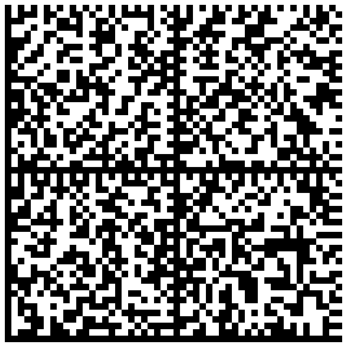
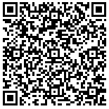

Réparons les qrcodes de Anti-Covid ...
Que faire si votre qrcode est illisible ?
Sur votre feuille de vaccination vous avez deux code-barres.
| Un semacode (data-matrix) à gauche | Un qrcode à droite |
|  |  |
Pour résoudre cela, scannez le contenu du semacode (data-matrix) avec une application de scan de code barre.
Par exemple google lens (android ou ios)
Puis copiez le résultat dans le champs ci dessous.
Enfin vous aurez un qrcode a scanner sur l'application Anti-Covid tout neuf, tout beau.
fait avec deno :